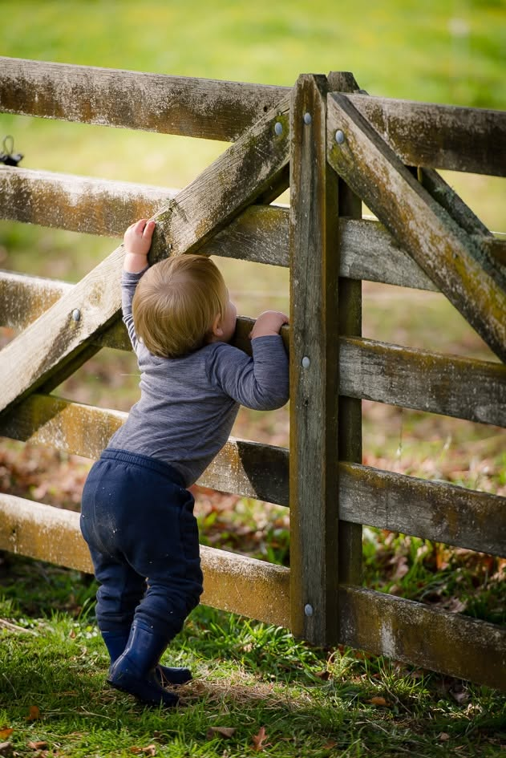

Since 1983
White Galloway Cattle

The Galloway is one of the world's oldest established beef breeds, originating in the harsh, damp climate of Galloway, Scotland. The White Galloway variant features a striking white coat with black (or dun/red) points on the ears, nose, eyes, feet, and tail.
Docility
Renowned for easy care and gentle handling. Their calm temperament makes them exceptionally easy to manage on small and large holdings alike.
Hardiness
A shaggy, double-layered coat (with up to 600 hairs/cm²) protects them from severe cold and rain, drastically reducing winter feed costs.
Naturally Polled
White Galloways are naturally hornless. Breeding them with other breeds introduces the polled gene, preventing horn growth in offspring.
Calving Ease
With very low birth weights (avg. 31–35kg) and a wide pelvic structure, they boast a 95%+ calving survival rate with almost zero calving difficulty.


Physical Breed Characteristics

Head & Ears
Broad face, large eyes, square nose, and wide furry ears with long protective hairs inside.
Naturally Polled
White Galloways are naturally hornless. A rounded bony poll sits at the top of the skull.
Thick Double Coat
A shaggy coarse outer coat sheds wind and rain, while a soft woolly undercoat preserves heat.
Symmetric & Stocky
Straight topline, well-sprung ribs, and a stocky, deep-bodied beef conformation.
Distinctive Points
Snow-white body with contrasting dark markings on ears, nose, eyes, and hooves.
American Miniature Horses

The American Miniature Horse is a unique and elegant breed, possessing the same beauty, refinement, and proportions of full-sized horses but in miniature scale. Suncrest Stud was a pioneer breeder of these delightful animals in New Zealand from 1989 to 2005, establishing a premier herd based on imported foundation genetics.
Refinement
Bred for correct equine conformation, featuring clean, elegant lines, a refined head, large nostrils, alert ears, and long, graceful legs.
Temperament
Exceptionally gentle, intelligent, and eager to please. Their sweet nature made them beloved family pets, show competitors, and therapy companions.
Color Variety
Adorned in a gorgeous palette of equine coat colors and patterns, ranging from classic bay and chestnut pintos to striking blanket Appaloosas.
Versatility
Highly capable in multiple disciplines, including in-hand showing, obstacle agility courses, and cart driving in single or team harness.

Physical Breed Characteristics

Height & Size
Stands under 97cm, weighing between 70kg and113kg at maturity.
Refined Head
A graceful head with large kind eyes and small alert ears.
Sleek & Winter Coat
Fine, sleek summer coat transitioning to a dense, protective double-coat during winter.
Equine Proportion
Symmetric conformation showing a straight topline, sloped shoulders, and well-angulated joints.
Graceful Legs
Graceful, well-boned legs with clean, correct joints and sound hooves.
About Suncrest Stud
From Miniature Horses to White Galloways
Starting in 1989, Karen & Bob Curry were one of the first breeders of purebred American Miniature Horses in New Zealand. From just a few, their herd grew to over thirty by 2005. To manage pastures, they cross-grazed white-faced cattle, which worked well but produced low cyclic beef market returns.
Looking for a specialized breed, they discovered the **White Galloway** at the Mystery Creek Field Days in 2003. They met John & Beryl Cleland of the Ngutunui Stud, who were dispersing their herd, and purchased their first four foundation cows.
Over the years, the stud established a fully pedigree registered herd of around 20 head, including breeding cows, bulls, yearlings, and calves. While Suncrest used to breed miniature horses, the stud now specializes exclusively in premium registered White Galloway cattle.
35+ Years
Of animal breeding experience
100% Pedigree
Fully registered beef genetics

Stud News & History
First White Galloway Calf in Chile
The export of Suncrest White Galloway genetics (semen & embryos) to Chilean breeder Ignacio Cifuentes resulted in the first purebred bull calf, "el Maravilla", born in Chile. This marks the beginning of the country's first foundation White Galloway herd.


World Galloway Congress Over the Years
Suncrest Stud operators Bob & Karen Curry have been active in the World Galloway Congress (WGC) since hosting visitors at Suncrest during the 6th WGC in Auckland back in 2008. Over the years, they have traveled to congresses in Denmark, Germany, Scotland, and Canada, trading insights with breeders globally.

Business Rural North Feature
Suncrest Stud was proudly profiled in the Autumn 2024 edition of the Business Rural North Magazine, highlighting our pedigree selection programme and the international demand for our exports.

Semen Supply to the NZ Dairy Industry
Suncrest was contracted by LIC to supply bulk semen straws from Stud Sires "Suncrest Arctic Bayley" and "Whisperings Jasper" to NZ dairy farmers. Dairy farmers increasingly use White Galloway genetics on young heifers to ensure safe, easy calving and highly-valued beef-cross calves.
Our Community
Links and sites of interest associated with our cattle and horse studs
Associated with White Galloway Cattle


Contact Us
Location
Upper Hutt, Wellington, New Zealand